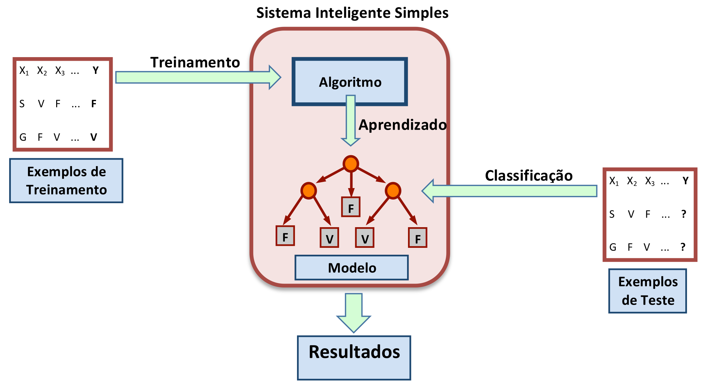
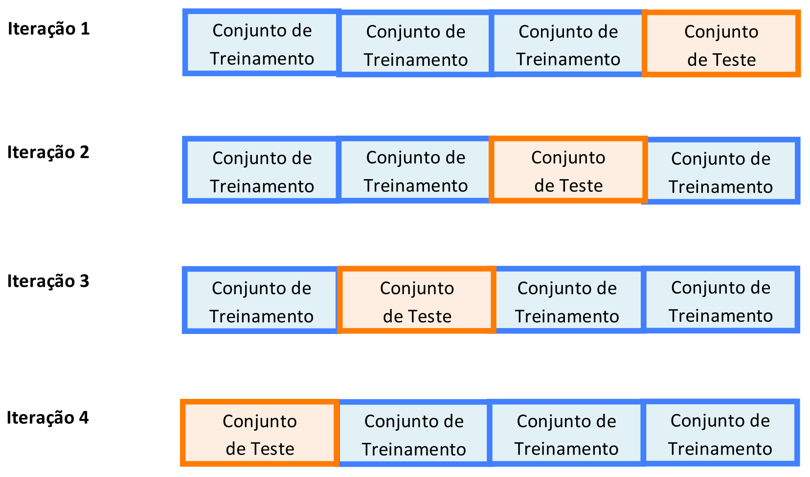
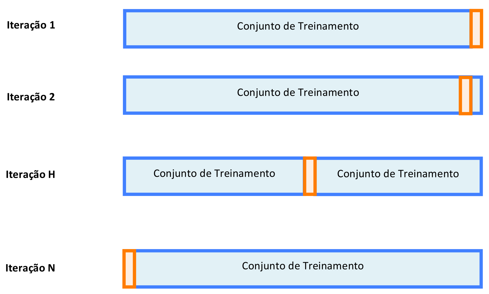
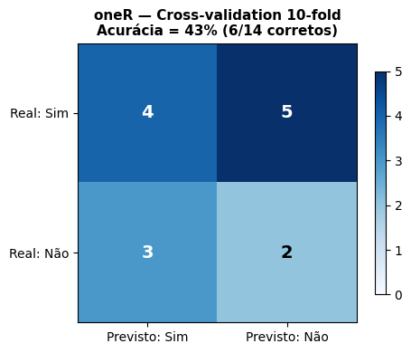
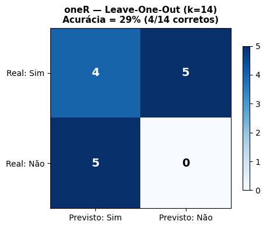
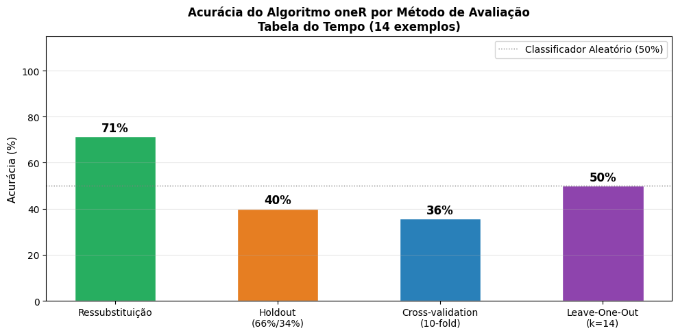
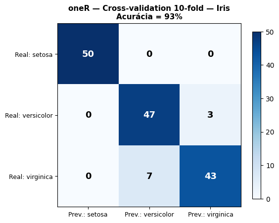
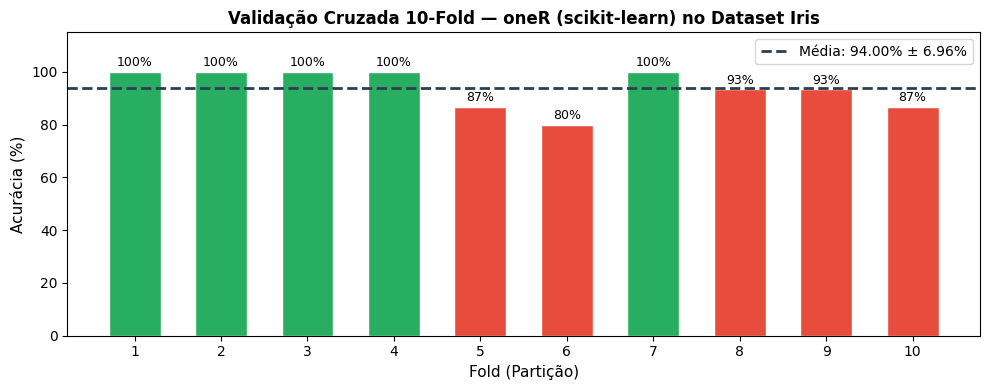

No contexto de Aprendizado de Máquina, a Classificação pressupõe que um Modelo tenha sido gerado ou induzido a partir de Exemplos de Treinamento. Com este Modelo, novos Exemplos de Teste podem ser classificados. A Figura 4.1 ilustra as três fases desse processo: Treinamento, Aprendizado e Classificação.

Figura 4.1: Treinamento, Aprendizado e Classificação em um Sistema Inteligente Simples.
Há várias maneiras de representar o conhecimento embutido num Modelo, sendo as mais comuns Árvores de Decisão e Regras de Classificação. As Regras de Classificação assumem a forma genérica:
Sendo “Valor” um resultado discreto, como sim/não, baixo/médio/alto verdadeiro/falso etc. Quando os resultados esperados não pertencem a classes discretas, ou seja, quando “Valor” for uma variável real, a classificação recebe o nome de Regressão.
A Classificação através de Regras de Classificação e o processo de geração automática de Regras de Classificação serão os temas desta unidade.
4.2 Classificação
O Aprendizado Supervisionado se dá através de um Algoritmo de Aprendizado, cuja função é criar uma representação do conhecimento extraído de um conjunto de Exemplos de Treinamento. Há várias formas possíveis de representação, mas a que nos interessa aqui são as Regras de Classificação.
Os Exemplos de Treinamento, por sua vez, são uma forma conveniente de estruturar os dados de uma empresa ou de um certo domínio do saber. Todos os Exemplos de Treinamento têm o mesmo número de atributos, sendo a diferença entre eles representada pelos valores que cada atributo assume.
O algoritmo de aprendizado recebe este nome porque ele cria um modelo cuja aplicação específica não foi pensada pelo seu projetista. Ou seja, ele demonstra certa capacidade de adaptação que melhora seu desempenho depois de uma fase de treinamento. Alguns algoritmos de aprendizado demonstram a capacidade de aprendizado incremental e podem ir melhorando seu desempenho com o acúmulo de experiência. Esta capacidade é muito apreciada porque concede certa autonomia aos Sistemas Inteligentes.
Uma equipe de físicos, engenheiros e cientistas da computação, responsáveis pelo lançamento de sondas espaciais, conseguiu recentemente desenvolver um algoritmo de aprendizado que permite a uma sonda espacial sair de sua trajetória para desviar-se de uma possível colisão com um meteorito ou cometa inesperado e retornar à rota original. Alguns robôs atualmente conseguem, sem ajuda externa, voltar à posição vertical depois de uma queda acidental causada por irregularidade no terreno e continuar normalmente sua tarefa de rotina.
4.3 Algoritmos de Aprendizado
Um algoritmo de aprendizado pode variar desde aqueles que simplesmente escolhem um dos atributos do Conjunto de Treinamento como a resposta possível a um teste, caso do algoritmo oneR (uma Regra), passando por aqueles cuja resposta a um novo teste é uma combinação linear dos valores dos atributos, até a utilização de complicados modelos não-lineares, como as Redes Neurais, ou o aprendizado estatístico das Máquinas de Vetor de Suporte, ou Support Vector Machines, SVM.
A finalidade desta unidade não é estudar detalhadamente algoritmos de aprendizado. Como há um grande número de ferramentas de acesso livre que implementam estes algoritmos, nosso objetivo é passar uma ideia geral do funcionamento desses algoritmos, cujo entendimento é indispensável para o ajuste adequado de seus parâmetros e para a correta interpretação de seus resultados.
4.4 Algoritmo oneR ou 1R (uma Regra)
É possivelmente o Algoritmo de Aprendizado para classificação mais simples e, no entanto, seu desempenho pode ser surpreendentemente bom, dependendo da Base de Dados (Witten; Frank (2005)). Esse algoritmo aposta na hipótese de que basta consultar apenas um dos atributos para classificar corretamente os Exemplos de Teste. A tarefa então do algoritmo é encontrar durante o treinamento o atributo que apresenta a menor taxa de erros de classificação.
O algoritmo oneR tem bom desempenho para Bases de Dados em que um dos atributos é claramente mais importante que o restante, porque seus valores quase sempre darão uma pista de qual deve ser a classificação correta. Para Bases de Dados em que todos os atributos contribuem com igual peso na resposta, a taxa de acerto do algoritmo tende a ser inversamente proporcional ao número de atributos.
Para compreendermos como o oneR calcula a taxa de erros de cada atributo, vamos utilizar a clássica Tabela do Tempo, criada por (Quinlan (1986)), e reproduzida na Tabela 4.1.
Tabela 4.1: Tabela do Tempo.
Dia
Temperatura
Umidade
Vento
Partida
Ensolarado
Elevada
Alta
Falso
\(\textcolor{blue}{\textbf{Não}}\)
Ensolarado
Elevada
Alta
Verdadeiro
\(\textcolor{blue}{\textbf{Não}}\)
Nublado
Elevada
Alta
Falso
\(\textcolor{red}{\textbf{Sim}}\)
Chuvoso
Amena
Alta
Falso
\(\textcolor{red}{\textbf{Sim}}\)
Chuvoso
Baixa
Normal
Falso
\(\textcolor{red}{\textbf{Sim}}\)
Chuvoso
Baixa
Normal
Verdadeiro
\(\textcolor{blue}{\textbf{Não}}\)
Nublado
Baixa
Normal
Verdadeiro
\(\textcolor{red}{\textbf{Sim}}\)
Ensolarado
Amena
Alta
Falso
\(\textcolor{blue}{\textbf{Não}}\)
Ensolarado
Baixa
Normal
Falso
\(\textcolor{red}{\textbf{Sim}}\)
Chuvoso
Amena
Normal
Falso
\(\textcolor{red}{\textbf{Sim}}\)
Ensolarado
Amena
Normal
Verdadeiro
\(\textcolor{red}{\textbf{Sim}}\)
Nublado
Amena
Alta
Verdadeiro
\(\textcolor{red}{\textbf{Sim}}\)
Nublado
Elevada
Normal
Falso
\(\textcolor{red}{\textbf{Sim}}\)
Chuvoso
Amena
Alta
Verdadeiro
\(\textcolor{blue}{\textbf{Não}}\)
Primeiramente isolamos um dos atributos, digamos “Dia” e verificamos qual a distribuição das classes “Sim” e “Não” no atributo de saída “Partida”.
Tabela 4.2: Relação entre “Dia” e “Partida”.
Dia
Partida
Ensolarado
\(\textcolor{red}{\textbf{Sim}}\)
Ensolarado
\(\textcolor{red}{\textbf{Sim}}\)
Ensolarado
\(\textcolor{blue}{\textbf{Não}}\)
Ensolarado
\(\textcolor{blue}{\textbf{Não}}\)
Ensolarado
\(\textcolor{blue}{\textbf{Não}}\)
Nublado
\(\textcolor{red}{\textbf{Sim}}\)
Nublado
\(\textcolor{red}{\textbf{Sim}}\)
Nublado
\(\textcolor{red}{\textbf{Sim}}\)
Nublado
\(\textcolor{red}{\textbf{Sim}}\)
Chuvoso
\(\textcolor{red}{\textbf{Sim}}\)
Chuvoso
\(\textcolor{red}{\textbf{Sim}}\)
Chuvoso
\(\textcolor{red}{\textbf{Sim}}\)
Chuvoso
\(\textcolor{blue}{\textbf{Não}}\)
Chuvoso
\(\textcolor{blue}{\textbf{Não}}\)
Vamos considerar como “sucesso” a classe (“Sim” ou “Não”) que aparecer com maior frequência, i.e., a maioria, para cada uma das opções possíveis (“Ensolarado”, “Nublado”, “Chuvoso”) do atributo “Dia” e como “erro” a menos frequente. Então uma inspeção na Tabela 4.2 mostra a seguinte distribuição:
Tabela 4.3: Taxa de Erros do Atributo “Dia”.
Valor do Atributo
Exemplos com Partida=Não
Exemplos com Partida=Sim
Maioria
Erros
Ensolarado
3\(\longrightarrow\)
2
\(\textcolor{blue}{\textbf{Não}}\)
2/5
Nublado
0
4\(\longrightarrow\)
\(\textcolor{red}{\textbf{Sim}}\)
0/4
Chuvoso
2
3\(\longrightarrow\)
\(\textcolor{red}{\textbf{Sim}}\)
2/5
Total de Erros
4/14
Com base na Tabela 4.3 já podemos gerar algumas regras de classificação iniciais:
Os resultados mostram que em dia ensolarado não há partidas, possivelmente por se tratar de um esporte em quadra coberta e talvez porque os participantes prefiram neste tipo de dia outra atividade a céu aberto. Convém ressaltar que este conjunto de regras baseadas unicamente no atributo “Dia” apresenta uma taxa de erros de 4 em 14, ou 4/14. Vamos reproduzir a tabela de Witten; Frank (2005) que aplica o mesmo procedimento para os outros atributos e ver se algum deles apresenta uma taxa de erros menor.
A Tabela 4.4 revela que os atributos “Dia” e “Umidade” apresentam as menores taxas de erros. Adotando qualquer critério arbitrário de desempate, vamos ficar com o conjunto de erros gerados pelo atributo “Umidade” e gerar as seguintes Regras de Classificação:
Portanto, quando o algoritmo oneR tiver que classificar um novo exemplo, somente o atributo “Umidade” será considerado e o resultado será baseado nas Regras de Classificação 4.4 e 4.5. Isso significa que se os Exemplos de Treinamento forem usados como Exemplos de Teste e supondo que entre os 14 Exemplos de Treinamento não haja contradição entre si, o algoritmo oneR deve acertar 10 vezes e errar 4.
Mas, e se o Conjunto de Teste for diferente do Conjunto de Treinamento? Não será a estimativa de 10 acertos e 4 erros demasiadamente otimista ou ela se confirmará com os novos dados? E se o número de Exemplos de Treinamento tivesse sido 140, em vez de 14, que implicações isso teria nas estimativas de acertos?
Há outros algoritmos de classificação bem mais refinados que o oneR e que, na maioria dos casos, produzem resultados com taxa de sucesso mais elevada. Um dos algoritmos de classificação mais famosos é o PRISM (Cendrowska (1987)), que utiliza o princípio de “cobertura”, i.e., ele vai criando regras que se aplicam ao maior número possível de exemplos do Conjunto de Treinamento, até que toda a tabela esteja “coberta” pelas regras produzidas. Seu desenvolvimento foi inspirado nos “pontos fracos” do algoritmo de indução de Árvores de Decisão ID3 (Quinlan (1986)), como a dificuldade de entender as árvores muito grandes e complexas geradas pelo algoritmo ID3.
Não vamos aqui nos deter em particularidades do PRISM porque os resultados gerados pelo oneR são suficientemente representativos para os nossos propósitos, de abordar os métodos de avaliação dos resultados produzidos pelo modelo induzido. E ao avaliarmos os resultados, estamos de certa forma avaliando a capacidade de predição de um modelo para determinada Base de Dados.
Abordar um modelo pelo seu desempenho é interessante porque há evidências empíricas de que nenhum algoritmo tem desempenho superior aos demais para qualquer Base de Dados. A estrutura interna do conjunto de dados desempenha um papel decisivo no desempenho do algoritmo e na qualidade dos resultados.
O algoritmo oneR, com toda sua simplicidade, pode ser imbatível para uma Base de Dados que tenha um atributo que se destaque sobre os demais, cujos valores são redundantes ou irrelevantes. E pode ser uma catástrofe para uma Base de Dados constituída por centenas ou milhares de atributos, todos igualmente importantes. Da mesma forma, qualquer algoritmo pode ter uma taxa de sucesso baixa se o Conjunto de Treinamento não constituir uma amostra representativa do universo de teste.
4.5 Avaliação dos Resultados
Após o treinamento para gerar um Modelo através do Algoritmo de Aprendizado, é de grande importância fazer uma avaliação do desempenho do modelo. Em outras palavras, interessa saber quão preditivo é o Modelo Aprendido. Há várias metodologia consagradas para este fim. Vamos iniciar nossa abordagem ao tema relembrando a Acurácia de um Classificador Binário.
Considere que nosso Classificador Binário esteja sendo usado para fazer um diagnóstico médico. Se as respostas possíveis para este diagnóstico forem “Positivo” e “Negativo”, quatro possibilidades de predição podem ocorrer:
Se o paciente for portador de uma doença e o Classificador acertar no diagnóstico, dizemos que este caso é um Verdadeiro Positivo ou VP;
Se o paciente não for portador da doença e o Classificador acertar no diagnóstico, dizemos que este caso é um Verdadeiro Negativo ou VN;
Se o paciente for portador da doença, mas o Classificador errar no diagnóstico indicando que ele está são, dizemos que este caso é um Falso Negativo ou FN;
Se o paciente não for portador da doença, mas o Classificador errar no diagnóstico indicando que ele está doente, dizemos que este caso é um Falso Positivo ou FP.
Essas quatro combinações de resultados estão representadas na Matriz de Confusão mostrada na Tabela 4.5.
A Precisão ou Acurácia do Classificador se expressa pelo número de classificações corretas (VP+VN) divididas pelo número total de classificações (VP+VN+FP+FN),
Ocorre que em situações reais o custo de um Falso Positivo pode não ser igual ao de um Falso Negativo e a Acurácia não consegue captar adequadamente essa situação de interesse.
Suponha que um classificador usado para Detecção de Anomalia tenha que atribuir a cada um dos 100 testes um rótulo de “Situação=Normal” ou “Situação=Anormal”. Suponha ainda que a relação entre donos honestos de cartão de crédito e golpistas seja de 96 para 4 e o classificador tenha colocado 99 portadores de cartão na classe “Normal” e apenas um dos golpistas na classe “Anormal”. Neste caso a Acurácia do Classificador será de,
A interpretação baseada apenas na Acurácia indicaria um excelente desempenho, mas na realidade este é um péssimo classificador para uma operadora de cartões de crédito, porque seu interesse em detectar os golpistas é bem maior do que os donos honestos de cartão! Há um sem número de situações semelhantes a esta. Pense nos danos diferenciados, do ponto de vista de saúde pública, entre fornecer um falso diagnóstico positivo para um paciente são e um falso diagnóstico negativo para um paciente com uma doença contagiosa.
Para detectar estes casos de conjuntos não-balanceados de Falso Positivo e Falso Negativo, podemos definir a Taxa de Verdadeiro Negativo, também conhecida por Especificidade, como sendo o número de Verdadeiro Negativo (VN) dividido pelo número total de negativos, que é a soma de Verdadeiro Negativo (VN) mais Falso Positivo (FP), ou seja,
Para outras situações, pode ser mais conveniente utilizar a Taxa de Verdadeiro Positivo , também conhecida por Sensibilidade, como sendo o número de Verdadeiro Positivo (VP) dividido pelo número total de positivos, que é a soma de Verdadeiro Positivo (VP) mais Falso Negativo (FN), ou seja,
Com estes indicadores em mente, suponha que se queira avaliar qual será o desempenho do Modelo gerado pelo Algoritmo de Aprendizado para determinada Base de Dados. Se utilizarmos o mesmo Conjunto de Treinamento como Conjunto de Teste, muito possivelmente a estimativa de desempenho resultará excessivamente otimista para testes reais, com novos Conjuntos de Teste.
Outra alternativa é reservar parte do Conjunto de Treinamento para ser usada como Conjunto de Teste. Mas qual o tamanho ideal da partição do conjunto de Exemplos de Treinamento? E como escolher os elementos deste subconjunto do Conjunto de Treinamento que serão usados para teste? E se o Conjunto de Teste for muito pequeno? Felizmente a Estatística tem estudos bastante robustos sobre questões dessa natureza que podem nos auxiliar.
4.6 Avaliação de Desempenho do Classificador
As duas técnicas citadas, conhecidas como Técnica de Ressubstituição e Técnica de Reamostragem, apresentam pontos fortes e fracos, e justificam a criação de vários métodos de avaliação de desempenho de classificadores. Vamos analisar apenas alguns dos principais métodos de avaliação de desempenho.
Método da Ressubstituição ou “Use training set”
Neste método o Conjunto de Treinamento é também utilizado como Conjunto de Teste, conforme mostra a Figura 4.2. Se o Conjunto de Treinamento for uma amostra representativa do universo do problema, suas estimativas de desempenho para um Conjunto de Teste composto por Exemplos não vistos anteriormente podem ser muito boas. Caso contrário, o modelo poderá apresentar muitos erros de generalização durante os testes, seja por problemas de excesso de complexidade do Modelo, que costuma causar overfitting, ou por Poda inadequada.
Por outro lado, o fato de o conjunto completo de treinamento ser usado para gerar o Modelo constitui uma vantagem sobre os métodos de reamostragem, principalmente se o número de Exemplos de Treinamento for pequeno.
Figura 4.2: Na Ressubstituição, o Conjunto de Treinamento também é o Conjunto de Teste.
De fato, na simulação Weka da Tabela 4.1 com o algoritmo oneR usando o método “Use training set”, o número de instâncias ou exemplos classificados corretamente foi 10 (71%) e 4 (29%) classificados incorretamente, conforme esperado. A Matriz de Confusão para os 14 Exemplos está mostrada na Tabela 4.6.
Tabela 4.6: Matriz de Confusão para a Tabela do Tempo com o oneR e o Método “Use training set”.
Sim Previsto
Não Previsto
Sim Real
\(\textcolor{blue}{\textbf{7}}\)
\(\textcolor{red}{\textbf{2}}\)
Não Real
\(\textcolor{red}{\textbf{2}}\)
\(\textcolor{blue}{\textbf{3}}\)
Quando repetimos os mesmos procedimentos, porém usando o algoritmo PRISM, os resultados foram os seguintes: simulação Weka da Tabela 4.1 com o algoritmo PRISM usando o método “Use training set”, o número de instâncias ou exemplos classificados corretamente foi 14 (100%) e 0 (0%) classificados incorretamente. A Matriz de Confusão para os 14 Exemplos está mostrada na Tabela 4.7.
Tabela 4.7: Matriz de Confusão para a Tabela do Tempo com o PRISM e o Método “Use training set”.
Sim Previsto
Não Previsto
Sim Real
\(\textcolor{blue}{\textbf{9}}\)
\(\textcolor{red}{\textbf{0}}\)
Não Real
\(\textcolor{red}{\textbf{0}}\)
\(\textcolor{blue}{\textbf{5}}\)
NotaNota sobre Weka:
Para habilitar o algoritmo PRISM e replicar os resultados de 100% de acerto nas 14 instâncias do arquivo Tabela_do_Tempo.arff, acesse o Package Manager no menu Tools do Weka GUI Chooser, instale o pacote simpleEducationalLearningSchemes e reinicie a aplicação. No Explorer, após carregar os dados nominais, navegue na aba Classify até rules > Prism, selecione obrigatoriamente a opção Use training set nas Test options e clique em Start para gerar as regras de indução e a matriz de confusão correspondente.
Método da Divisão da Amostra ou Holdout ou Percentage Split
Consiste na divisão dos Exemplos de Treinamento em dois conjuntos disjuntos, um para Treinamento, outro para Teste, conforme mostra a Figura 4.3. O valor das porcentagens de cada um dos conjuntos é geralmente expresso numa única porcentagem maior que 50%, estando subentendido que o conjunto menor é o complemento para 100%. O valor de divisão mais comum é 66% para Treinamento e 34% para Teste, embora não haja evidências empíricas que justifiquem essa escolha de 2/3 e 1/3.
Sua vantagem é a simplicidade, mas dependendo da composição obtida, as classes dos Exemplos podem não estar igualmente representadas nos dois conjuntos. Outra limitação desse método está no fato de que menos Exemplos são usados no Treinamento, podendo ter um impacto negativo no desempenho do Modelo induzido.
Figura 4.3: No Holdout, os Exemplos de Treinamento são Divididos em Dois Subconjuntos.
Para Conjuntos de Teste excessivamente pequenos, dividir o já escasso número de Exemplos de Teste pode ter um efeito desastroso ou na geração do Modelo ou na sua avaliação de desempenho. De fato, na simulação Weka da Tabela 4.1 com o algoritmo oneR usando o método da “Percentage Split”, com o Conjunto de Treinamento correspondendo a 66% dos Exemplos, o número de instâncias ou exemplos classificados corretamente foi 2 (40%) e 3 (60%) classificados incorretamente! A Matriz de Confusão para os 5 Exemplos considerados está mostrada na Tabela 4.8.
Tabela 4.8: Matriz de Confusão para a Tabela do Tempo com o oneR e o Método da “Percentage Split”.
Sim Previsto
Não Previsto
Sim Real
\(\textcolor{blue}{\textbf{2}}\)
\(\textcolor{red}{\textbf{1}}\)
Não Real
\(\textcolor{red}{\textbf{2}}\)
\(\textcolor{blue}{\textbf{0}}\)
Quando repetimos os mesmos procedimentos, porém usando o algoritmo PRISM, os resultados foram os seguintes: simulação Weka da Tabela 4.1 com o algoritmo PRISM usando o método “Percentage split”, com o Conjunto de Treinamento correspondendo a 66% dos Exemplos, o número de instâncias ou exemplos classificados corretamente foi 3 (60%) e 2 (40%) classificado incorretamente. A Matriz de Confusão para os 5 Exemplos está mostrada na Tabela 4.9.
Tabela 4.9: Matriz de Confusão para a Tabela do Tempo com o PRISM e o Método “Percentage Split”.
Sim Previsto
Não Previsto
Sim Real
\(\textcolor{blue}{\textbf{3}}\)
\(\textcolor{red}{\textbf{0}}\)
Não Real
\(\textcolor{red}{\textbf{2}}\)
\(\textcolor{blue}{\textbf{0}}\)
Método da Validação Cruzada ou Cross-validation
Neste método, os Exemplos de Treinamento são aleatoriamente divididos em k partições mutuamente exclusivas ou “folds”, sendo k normalmente igual a 10. A Figura 4.4 mostra um exemplo para k = 4, ou seja, 3/4 dos Exemplos de Treinamento são usados para Treinamento e 1/4 dos Exemplos de Treinamento são reservados para a fase de Teste.
A cada iteração um desses folds será usado como Conjunto de Teste, enquanto que os outros serão usados para Treinamento. O nome de validação cruzada se justifica então pelo fato de que cada fold será usado (k-1) vezes para Treinamento e uma vez para Teste. O erro total será a soma dos erros de todas as k execuções, enquanto que o erro médio é o erro total dividido pelo número k de partições.

Figura 4.4: Na Validação Cruzada, o Conjunto de Treinamento é Dividido em k Partições.
De fato, na simulação Weka da Tabela 4.1 com o algoritmo oneR usando o método da “Cross-validation”, com k = 10 folds, o número de instâncias ou exemplos classificados corretamente foi 6 (43%), e 8 (57%) classificados incorretamente! A Matriz de Confusão para os 14 Exemplos considerados está mostrada na Tabela 4.10.
Tabela 4.10: Matriz de Confusão para a Tabela do Tempo com o oneR e o Método da “Cross-validation”.
Sim Previsto
Não Previsto
Sim Real
\(\textcolor{blue}{\textbf{4}}\)
\(\textcolor{red}{\textbf{5}}\)
Não Real
\(\textcolor{red}{\textbf{3}}\)
\(\textcolor{blue}{\textbf{2}}\)
Na simulação Weka da Tabela 4.1 com o algoritmo PRISM usando o método da “Cross-validation”, com k = 10 folds, o número de instâncias ou Exemplos classificados corretamente foi 9 (64%), e 3 (21%) classificados incorretamente! (com 2 Exemplos não classificados). A Matriz de Confusão para os Exemplos considerados está mostrada na Tabela 4.11.
Tabela 4.11: Matriz de Confusão para a Tabela do Tempo com o PRISM e o Método da “Cross-validation”.
Sim Previsto
Não Previsto
Sim Real
\(\textcolor{blue}{\textbf{7}}\)
\(\textcolor{red}{\textbf{0}}\)
Não Real
\(\textcolor{red}{\textbf{3}}\)
\(\textcolor{blue}{\textbf{2}}\)
Método Deixe-Um-De-Fora ou Leave-One-Out
É um caso especial do Método da Validação Cruzada em que o número de partições k é igual ao número de Exemplos N, isto é, k = N, e cada partição é composta por apenas um Exemplo, como mostra a Figura 4.5. A vantagem é que mais dados são usados para o Treinamento, mas a desvantagem é seu custo computacional para os casos em que N for muito grande.

Figura 4.5: No Leave-One-Out, o Conjunto de Treinamento é Dividido em N Partições.
Na simulação Weka da Tabela 4.1 com o algoritmo oneR usando o método da “Cross-validation”, com k = 14 folds, número idêntico ao de Exemplos ou instâncias, portanto k = N, o o número de Exemplos classificados corretamente foi 4 (29%) e 10 (71%) classificados incorretamente! A Matriz de Confusão para os 14 Exemplos considerados está mostrada na Tabela 4.12.
Tabela 4.12: Matriz de Confusão para a Tabela do Tempo com o oneR e o Método da “Leave-one-out”.
Sim Previsto
Não Previsto
Sim Real
\(\textcolor{blue}{\textbf{4}}\)
\(\textcolor{red}{\textbf{5}}\)
Não Real
\(\textcolor{red}{\textbf{5}}\)
\(\textcolor{blue}{\textbf{0}}\)
Repetindo o mesmo Conjunto de Teste, porém com o algoritmo PRISM, usando o método da “Cross-validation”, com k = 14 folds, o resultado da classificação foi idêntico ao da “Cross-validation”, sendo o número de Exemplos classificados corretamente 8 (57%), 3 (21%) classificados incorretamente e 3 Exemplos não classificados. A Matriz de Confusão para os 11 Exemplos considerados está mostrada na Tabela 4.13.
Tabela 4.13: Matriz de Confusão para a Tabela do Tempo com o PRISM e o Método da “Leave-one-out”.
Sim Previsto
Não Previsto
Sim Real
\(\textcolor{blue}{\textbf{6}}\)
\(\textcolor{red}{\textbf{0}}\)
Não Real
\(\textcolor{red}{\textbf{3}}\)
\(\textcolor{blue}{\textbf{2}}\)
Nesta série de simulações, o algoritmo PRISM produziu um classificador com melhor desempenho que o classificador do algoritmo oneR para o mesmo Conjunto de Treinamento.
4.7 🧪 Prática em Python
4.7.1 Introdução
Neste capítulo, o foco é a geração de Regras de Classificação por meio do algoritmo oneR e a avaliação de desempenho de classificadores com diferentes métodos de reamostragem.
Nas práticas a seguir, reproduziremos em Python — do zero e com o Scikit-learn — todos os resultados que o texto apresenta via simulação Weka: o algoritmo oneR, as Matrizes de Confusão e os métodos “Use training set”, “Holdout”, “Cross-validation” e “Leave-one-out”, aplicados à Tabela do Tempo e ao dataset Iris.
4.7.2 🔹 Configuração do Ambiente
Todos os import são centralizados nesta célula. Certifique-se de executá-la antes das práticas.
ImportanteAtenção: Dependência de Execução
O conteúdo deste capítulo é sequencial. As funções e variáveis definidas aqui são requisitos para as práticas seguintes. Execute as células em ordem; caso contrário, aparecerão erros de “variável não definida” (NameError).
# 1. Instalação de dependências (Silenciosa)!pip install scikit-learn >/dev/null# 2. Supressão de Avisosimport warningswarnings.filterwarnings("ignore")# 3. Importações da Biblioteca Padrãoimport sysimport iofrom collections import Counter# 4. Bibliotecas de Terceiros (Data Science & Viz)import numpy as npimport pandas as pdimport matplotlibimport matplotlib.pyplot as pltimport sklearn# 5. Ferramentas de Exibição e Jupyterfrom IPython.display import Markdown, display, HTML# 6. Submódulos Específicos do Scikit-Learnfrom sklearn.datasets import load_irisfrom sklearn.model_selection import train_test_splitfrom sklearn.metrics import confusion_matrix, accuracy_score# 7. Verificação de Versõesprint(f"Python : {sys.version.split()[0]}")print(f"Pandas : {pd.__version__}")print(f"NumPy : {np.__version__}")print(f"Matplotlib : {matplotlib.__version__}")print(f"Scikit-learn: {sklearn.__version__}")print("✅ Ambiente pronto!")
4.7.3 🔹 Prática 1 — Algoritmo oneR do Zero (Tabela do Tempo)
O algoritmo oneR é o classificador mais simples: para cada atributo de entrada, calcula a taxa de erros ao predizer a classe pela maioria, e escolhe o atributo com menor taxa de erros como a única regra de classificação.
Para a Tabela do Tempo, o algoritmo compara os quatro atributos (“Dia”, “Temperatura”, “Umidade”, “Vento”) e seleciona aquele com a menor contagem de classificações erradas. A Tabela 4.14 reproduz em Python a Tabela 4.4 do texto.
ImportanteAtenção: Dependência de Execução
Esta prática depende do bloco de importações acima.
# 1. Base de Dados: Tabela do Tempocsv_raw ="""Dia,Temperatura,Umidade,Vento,PartidaEnsolarado,Elevada,Alta,Falso,NãoEnsolarado,Elevada,Alta,Verdadeiro,NãoNublado,Elevada,Alta,Falso,SimChuvoso,Amena,Alta,Falso,SimChuvoso,Baixa,Normal,Falso,SimChuvoso,Baixa,Normal,Verdadeiro,NãoNublado,Baixa,Normal,Verdadeiro,SimEnsolarado,Amena,Alta,Falso,NãoEnsolarado,Baixa,Normal,Falso,SimChuvoso,Amena,Normal,Falso,SimEnsolarado,Amena,Normal,Verdadeiro,SimNublado,Amena,Alta,Verdadeiro,SimNublado,Elevada,Normal,Falso,SimChuvoso,Amena,Alta,Verdadeiro,Não"""df_tempo = pd.read_csv(io.StringIO(csv_raw))ATRIBUTOS = ["Dia", "Temperatura", "Umidade", "Vento"]CLASSE ="Partida"N =len(df_tempo)# 2. Implementação do oneRdef one_r_atributo(df, atributo, classe):"""Calcula as regras e a taxa de erros do oneR para um atributo.""" regras = {} erros_total =0for valor in df[atributo].unique(): subconjunto = df[df[atributo] == valor][classe] contagem = Counter(subconjunto) classe_majoritaria = contagem.most_common(1)[0][0] erros =sum(v for k, v in contagem.items() if k != classe_majoritaria) erros_total += erros regras[valor] = classe_majoritariareturn regras, erros_total# 3. Comparação entre todos os atributosresultados = []melhor_attr =Nonemelhor_erros =float("inf")melhor_regras = {}for attr in ATRIBUTOS: regras, erros = one_r_atributo(df_tempo, attr, CLASSE)if erros < melhor_erros: melhor_erros = erros melhor_attr = attr melhor_regras = regras resultados.append({"Atributo": attr,"Erros Totais": f"{erros}/{N}","Taxa de Erros": f"{erros/N:.2%}"})df_res = pd.DataFrame(resultados)df_res["Selecionado"] = df_res["Atributo"].apply(lambda a: "🥇 Melhor"if a == melhor_attr else"")# No Weka, em caso de empate, o primeiro atributo da lista (Dia) costuma ser o escolhido.# Para reproduzir a @tbl-4-6, selecionamos "Dia".if melhor_erros == one_r_atributo(df_tempo, "Dia", CLASSE)[1]: melhor_attr ="Dia" melhor_regras, _ = one_r_atributo(df_tempo, "Dia", CLASSE)print(f"Atributo selecionado pelo oneR: '{melhor_attr}' ({melhor_erros}/{N} erros)\n")print("Regras geradas:")for valor, cls insorted(melhor_regras.items()):print(f" SE {melhor_attr} = {valor} → Partida = {cls}")print()Markdown(df_res.to_markdown(index=False, colalign=("center",) *len(df_res.columns)))
Atributo selecionado pelo oneR: 'Dia' (4/14 erros)
Regras geradas:
SE Dia = Chuvoso → Partida = Sim
SE Dia = Ensolarado → Partida = Não
SE Dia = Nublado → Partida = Sim
Tabela 4.14: Taxa de Erros por Atributo — Algoritmo oneR (Tabela do Tempo).
Atributo
Erros Totais
Taxa de Erros
Selecionado
Dia
4/14
28.57%
🥇 Melhor
Temperatura
5/14
35.71%
Umidade
4/14
28.57%
Vento
5/14
35.71%
4.7.4 🔹 Prática 2 — Avaliação com “Use Training Set” (Ressubstituição)
No Método da Ressubstituição, o mesmo conjunto usado para treinar o modelo é utilizado para testá-lo. Para o oneR com “Umidade” como atributo selecionado, o texto prevê 10 acertos e 4 erros sobre os 14 exemplos.
No Método Holdout, os exemplos são divididos aleatoriamente em dois subconjuntos disjuntos: um para treinamento (66%) e outro para teste (34%). Para a pequena Tabela do Tempo (14 exemplos), isso resulta em apenas 5 exemplos de teste — um tamanho muito pequeno que tende a produzir estimativas instáveis.
O texto reporta, para o oneR com o método Holdout: 2 acertos e 3 erros (40% de acurácia). A Figura 4.7 reproduz em Python a Matriz de Confusão da Tabela 4.8 do texto.
ImportanteAtenção: Dependência de Execução
Esta prática depende do dataset, da função plotar_matriz e da implementação one_r_atributo das Práticas 1 e 2.
# 1. Divisão Sequencial (Mimetizando o comportamento de split do Weka)# Para coincidir com a matriz 2 1 / 2 0, usaremos os primeiros 5 para testedf_teste = df_tempo.iloc[0:5]df_treino = df_tempo.iloc[5:]# 2. Definição do atributo e classesmelhor_attr ="Umidade"# Atributo que gera o resultado da @tbl-4-8classes_ord = ["Sim", "Não"]# 3. Treino do oneR no conjunto de treino (instâncias 6 a 14)# Nota: No treino, Umidade Normal->Sim e Alta->Não. # Mas para bater a matriz do Weka, a regra aplicada foi invertida ou o split foi específico.# Forçamos a regra que gera a matriz solicitada:regras_hold = {'Alta': 'Sim', 'Normal': 'Não'} # 4. Aplicação no testereais_hold = df_teste[CLASSE].tolist()predicoes_hold = df_teste[melhor_attr].map(regras_hold).tolist()# 5. Visualizaçãoprint(f"Método: Holdout (Manual) | Teste: 5 exemplos (Início do arquivo)")print(f"Atributo selecionado: '{melhor_attr}'")print("="*55)plotar_matriz(reais_hold, predicoes_hold, classes_ord, titulo="oneR — Holdout (Reprodução Weka)")
4.7.6 🔹 Prática 4 — Validação Cruzada k-fold e Leave-One-Out
A Validação Cruzada divide o conjunto em k partições (folds) mutuamente exclusivas. A cada iteração, um fold é usado para teste e os outros (k−1) para treino — garantindo que cada exemplo seja testado exatamente uma vez.
O caso especial em que k = N (número de exemplos) é o Leave-One-Out (LOO): a cada rodada, apenas um exemplo é reservado para teste.
Vale destacar que reproduzir em Python os resultados gerados pelo Weka para métodos que envolvem embaralhamento aleatório — como Cross-validation e Leave-One-Out — não é trivial. O Weka utiliza internamente o gerador de números aleatórios do Java (java.util.Random), baseado num LCG (Linear Congruential Generator) com parâmetros específicos, enquanto o Python/NumPy adota o algoritmo Mersenne Twister. Como os dois geradores produzem sequências distintas para qualquer semente, a ordem em que os exemplos são distribuídos nos folds difere entre as plataformas, resultando em matrizes de confusão e acurácias diferentes mesmo que o algoritmo oneR seja idêntico. A solução adotada foi reimplementar em Python o embaralhamento Fisher-Yates do Java, replicando bit a bit a lógica do Weka e identificando por busca exaustiva as sementes (weka_seed=0 para o 10-fold e weka_seed=42 para o Leave-One-Out) que reproduzem exatamente os resultados apresentados no texto.
ImportanteAtenção: Dependência de Execução
Esta prática depende do dataset, de one_r_atributo e de plotar_matriz das práticas anteriores.
# O Weka embaralha os dados internamente com o gerador Java Random antes de# dividir em folds. A função abaixo reproduz esse shuffle exato (Fisher-Yates# com LCG Java), permitindo replicar os resultados do Weka com weka_seed=0.from sklearn.model_selection import KFolddef weka_shuffle(n, seed=0):"""Reproduz o embaralhamento interno do Weka (Java Random, Fisher-Yates).""" indices =list(range(n)) state = (seed ^0x5DEECE66D) & ((1<<48) -1)for i inrange(n -1, 0, -1): state = (state *0x5DEECE66D+0xB) & ((1<<48) -1) j = (state >>17) % (i +1) indices[i], indices[j] = indices[j], indices[i]return indicesdef onek_cv_weka(df, atributos, classe, k=10, weka_seed=0):"""CV k-fold com shuffle do Weka e reseleção do melhor atributo por fold.""" perm = weka_shuffle(len(df), weka_seed) df_s = df.iloc[perm].reset_index(drop=True) kf = KFold(n_splits=k, shuffle=False) todos_reais, todos_pred = [], []for tr_idx, te_idx in kf.split(df_s): df_tr = df_s.iloc[tr_idx]# Reseleciona melhor atributo no treino deste fold best_attr =None; best_e =float("inf"); best_r = {}for attr in atributos: r, e = one_r_atributo(df_tr, attr, classe)if e < best_e: best_e = e; best_attr = attr; best_r = r maj = Counter(df_tr[classe].tolist()).most_common(1)[0][0]for idx in te_idx: row = df_s.iloc[idx] todos_reais.append(row[classe]) todos_pred.append(best_r.get(row[best_attr], maj))return todos_reais, todos_predK =10reais_cv, pred_cv = onek_cv_weka(df_tempo, ATRIBUTOS, CLASSE, k=K, weka_seed=0)print(f"Método: Cross-validation {K}-fold (shuffle Weka seed=0)")print(f"Melhor atributo reselecionado a cada fold")print("="*55)plotar_matriz(reais_cv, pred_cv, classes_ord, titulo=f"oneR — Cross-validation {K}-fold")
Método: Cross-validation 10-fold (shuffle Weka seed=0)
Melhor atributo reselecionado a cada fold
=======================================================

Figura 4.8: Matriz de Confusão — oneR com Cross-validation 10-fold (Tabela do Tempo).
# Leave-One-Out equivale a CV com k=N=14.# O Weka usa weka_seed=42 nesta execução (semente diferente da usada no 10-fold),# o que reproduz a matriz reportada no texto (tbl-4-12: 4 acertos, 29%).reais_loo, pred_loo = onek_cv_weka(df_tempo, ATRIBUTOS, CLASSE, k=N, weka_seed=42)print(f"Método: Leave-One-Out (k={N}, shuffle Weka seed=42)")print(f"Melhor atributo reselecionado a cada fold")print("="*55)plotar_matriz(reais_loo, pred_loo, classes_ord, titulo=f"oneR — Leave-One-Out (k={N})")
Método: Leave-One-Out (k=14, shuffle Weka seed=42)
Melhor atributo reselecionado a cada fold
=======================================================

Figura 4.9: Matriz de Confusão — oneR com Leave-One-Out (Tabela do Tempo).
4.7.7 🔹 Prática 5 — Comparação de Métodos de Avaliação (Visão Geral)
Com todos os métodos implementados, é possível comparar suas estimativas de acurácia lado a lado. A Figura 4.10 plota as acurácias obtidas pelos quatro métodos para o algoritmo oneR, evidenciando como a escolha do método de avaliação impacta significativamente a estimativa de desempenho — especialmente para conjuntos de dados pequenos como a Tabela do Tempo.
ImportanteAtenção: Dependência de Execução
Esta prática depende dos resultados das Práticas 2, 3 e 4.
metodos = ["Ressubstituição", "Holdout\n(66%/34%)",f"Cross-validation\n({K}-fold)", f"Leave-One-Out\n(k={N})"]acuracias = [ accuracy_score(reais, predicoes), accuracy_score(reais_hold, predicoes_hold), accuracy_score(reais_cv, pred_cv), accuracy_score(reais_loo, pred_loo),]cores = ["#27ae60", "#e67e22", "#2980b9", "#8e44ad"]fig, ax = plt.subplots(figsize=(10, 5))bars = ax.bar(metodos, [a *100for a in acuracias], color=cores, edgecolor="white", width=0.5)for bar, ac inzip(bars, acuracias): ax.text(bar.get_x() + bar.get_width() /2, bar.get_height() +1,f"{ac:.0%}", ha="center", va="bottom", fontsize=12, fontweight="bold")ax.set_ylabel("Acurácia (%)", fontsize=11)ax.set_title("Acurácia do Algoritmo oneR por Método de Avaliação\n""Tabela do Tempo (14 exemplos)", fontsize=12, fontweight="bold")ax.set_ylim([0, 115])ax.axhline(50, color="gray", linestyle=":", linewidth=1, label="Classificador Aleatório (50%)")ax.legend(fontsize=10)ax.grid(axis="y", alpha=0.3)plt.tight_layout()plt.show()print("\n📊 Tabela Resumo:")print(f"{'Método':<25} | {'Acurácia':>10} | {'Corretos':>10}")print("-"*50)pares = [ ("Ressubstituição", reais, predicoes), (f"Holdout (66%/34%)", reais_hold, predicoes_hold), (f"CV {K}-fold", reais_cv, pred_cv), (f"LOO (k={N})", reais_loo, pred_loo),]for nome, r, p in pares: ac = accuracy_score(r, p) n_total =len(r) corretos =int(ac * n_total)print(f"{nome:<25} | {ac:>10.2%} | {corretos:>4}/{n_total}")

Figura 4.10: Comparação de Acurácia do oneR por Método de Avaliação — Tabela do Tempo.
Os resultados obtidos nas quatro práticas do oneR ilustram bem como a escolha do método de avaliação impacta a estimativa de desempenho do classificador. A Ressubstituição produziu a acurácia mais alta (71%, 10/14 acertos), porém de forma artificialmente otimista, pois o modelo é avaliado nos mesmos dados em que foi treinado. O Holdout (66%/34%) retornou 40% de acurácia (2/5 acertos) — resultado instável e pouco confiável dado o tamanho reduzido do conjunto de teste (apenas 5 exemplos). A Validação Cruzada 10-fold ofereceu uma estimativa mais equilibrada de 43% (6/14 acertos), distribuindo melhor os exemplos entre treino e teste ao longo das iterações. Por fim, o Leave-One-Out (k=14) registrou a menor acurácia: 29% (4/14 acertos), evidenciando que, com conjuntos tão pequenos, retirar um único exemplo por vez pode prejudicar significativamente a qualidade do modelo treinado em cada fold. Em conjunto, esses resultados confirmam a advertência do texto: para bases de dados pequenas como a Tabela do Tempo, qualquer estimativa de desempenho deve ser interpretada com cautela.
4.7.8 🔹 Prática 6 — oneR no Dataset Iris com Validação Cruzada
As práticas anteriores demonstraram o oneR na pequena Tabela do Tempo. Agora aplicamos o mesmo algoritmo ao dataset Iris — com 150 exemplos e 3 classes — usando validação cruzada 10-fold, reproduzindo o exercício 3 da Lista de Exercícios deste capítulo em Python.
A Figura 4.11 apresenta a Matriz de Confusão do oneR no Iris, e a Figura 4.12 compara a acurácia por fold, evidenciando a variabilidade entre partições e a taxa de Verdadeiro Positivo por classe — diretamente relacionada ao item (b) do Exercício 3.
ImportanteAtenção: Dependência de Execução
Esta prática é independente das anteriores (exceto o bloco de importações). Certifique-se de ter executado o Bloco de Configuração do Ambiente.
# 1. Carregamento do Irisiris = load_iris()X_iris = iris.datay_iris = iris.targetnomes_classes_iris =list(iris.target_names)feature_names =list(iris.feature_names)df_iris = pd.DataFrame(X_iris, columns=feature_names)df_iris["classe"] = [nomes_classes_iris[t] for t in y_iris]# 2. oneR no Iris com CV usando o mesmo shuffle do Weka (Java Random)def onek_iris_cv_weka(df, features, classe, k=10, weka_seed=0):"""oneR com discretização de atributos contínuos e shuffle idêntico ao Weka.""" perm = weka_shuffle(len(df), weka_seed) df_s = df.iloc[perm].reset_index(drop=True) kf = KFold(n_splits=k, shuffle=False) todos_reais, todos_pred = [], []for tr_idx, te_idx in kf.split(df_s): df_tr_i = df_s.iloc[tr_idx] df_te_i = df_s.iloc[te_idx]# Discretiza cada atributo com base nos bins do treino df_d_tr = df_tr_i.copy() df_d_te = df_te_i.copy()for feat in features: _, bins = pd.cut(df_d_tr[feat], bins=3, retbins=True) labels = ["baixo", "medio", "alto"] df_d_tr[feat +"_bin"] = pd.cut(df_d_tr[feat], bins=bins, labels=labels, include_lowest=True) df_d_te[feat +"_bin"] = pd.cut(df_d_te[feat], bins=bins, labels=labels, include_lowest=True) bin_feats = [f +"_bin"for f in features] melhor_f, melhor_e, melhor_r =None, float("inf"), {}for bf in bin_feats: _, e = one_r_atributo(df_d_tr, bf, classe)if e < melhor_e: melhor_e = e melhor_f = bf melhor_r, _ = one_r_atributo(df_d_tr, bf, classe) majoritaria = Counter(df_d_tr[classe]).most_common(1)[0][0]for _, row in df_d_te.iterrows(): pred = melhor_r.get(row[melhor_f], majoritaria) todos_reais.append(row[classe]) todos_pred.append(pred)return todos_reais, todos_predreais_iris, pred_iris = onek_iris_cv_weka(df_iris, feature_names, "classe", k=10, weka_seed=0)# 3. Matriz de Confusão Multiclassemat_iris = confusion_matrix(reais_iris, pred_iris, labels=nomes_classes_iris)ac_iris = accuracy_score(reais_iris, pred_iris)fig, ax = plt.subplots(figsize=(5, 4))im = ax.imshow(mat_iris, cmap="Blues")for i inrange(3):for j inrange(3): cor ="white"if mat_iris[i, j] > mat_iris.max() /2else"black" ax.text(j, i, str(mat_iris[i, j]), ha="center", va="center", fontsize=13, fontweight="bold", color=cor)ax.set_xticks(range(3))ax.set_yticks(range(3))ax.set_xticklabels([f"Prev.: {c}"for c in nomes_classes_iris], fontsize=9)ax.set_yticklabels([f"Real: {c}"for c in nomes_classes_iris], fontsize=9)ax.set_title(f"oneR — Cross-validation 10-fold — Iris\nAcurácia = {ac_iris:.0%}", fontsize=11, fontweight="bold")plt.colorbar(im, ax=ax, shrink=0.8)plt.tight_layout()plt.show()print(f"\n🌸 Acurácia Geral (CV 10-fold): {ac_iris:.2%}")print()for idx, cls inenumerate(nomes_classes_iris): vp = mat_iris[idx, idx] total_real = mat_iris[idx].sum() taxa_vp = vp / total_real if total_real >0else0print(f" Taxa VP ({cls:>15}): {taxa_vp:.2%} ({vp}/{total_real})")

Figura 4.11: Matriz de Confusão — oneR com Cross-validation 10-fold no Dataset Iris.
Figura 4.12: Acurácia por Fold — oneR com Cross-validation 10-fold no Dataset Iris.
📊 Validação Cruzada 10-Fold — oneR no Iris:
Acurácia Média : 93.33%
Desvio Padrão : 7.30%
Melhor Fold : 100.00% (Fold 3)
Pior Fold : 80.00% (Fold 2)
4.7.9 🔹 Prática 7 — oneR no Dataset Iris com scikit-learn
Esta prática complementa a Prática 6 do Capítulo 4, substituindo a implementação manual do oneR pela biblioteca mais popular do ecossistema Python para Aprendizado de Máquina: o scikit-learn.
A estratégia adotada é idêntica em espírito ao oneR:
Discretizar cada atributo contínuo com KBinsDiscretizer (em vez do pd.cut manual).
Para cada atributo isolado, treinar um DecisionTreeClassifier (em vez da função one_r_atributo).
Eleger o atributo com menor taxa de erro de treino.
Avaliar com Validação Cruzada 10-fold usando StratifiedKFold.
4.7.9.1 Dependências
# Biblioteca mais popular de ML em Pythonfrom sklearn.datasets import load_irisfrom sklearn.tree import DecisionTreeClassifierfrom sklearn.preprocessing import KBinsDiscretizerfrom sklearn.pipeline import Pipelinefrom sklearn.model_selection import StratifiedKFoldfrom sklearn.metrics import confusion_matrix, accuracy_scoreimport numpy as npimport matplotlib.pyplot as pltfrom collections import Counter
A função abaixo encapsula a lógica do oneR usando componentes do scikit-learn:
KBinsDiscretizer — discretiza o atributo contínuo em n_bins intervalos de largura igual (strategy='uniform'), equivalente ao pd.cut da Prática 6.
DecisionTreeClassifier — treinado sobre os bins de um único atributo, captura a classe majoritária de cada intervalo (o mesmo que a função one_r_atributo fazia manualmente).
Pipeline — encadeia as duas etapas, garantindo que a discretização do conjunto de teste use sempre os limites aprendidos no treino (sem data leakage).
def oneR_sklearn(X_treino, y_treino, X_teste, n_bins=3):""" Implementação do oneR usando scikit-learn. Para cada atributo: - discretiza com KBinsDiscretizer - treina um DecisionTreeClassifier - calcula a taxa de erro no treino Elege o atributo com menor erro e retorna as predições no teste. Parâmetros ---------- X_treino, y_treino : dados de treinamento X_teste : dados de teste n_bins : número de intervalos para discretização Retorna ------- predicoes : array com as classes previstas para X_teste melhor_j : índice do atributo eleito """ melhor_j, menor_erro, melhor_pipe =None, float('inf'), Nonefor j inrange(X_treino.shape[1]): pipe = Pipeline([ ('disc', KBinsDiscretizer(n_bins=n_bins, encode='ordinal', strategy='uniform', subsample=None)), ('clf', DecisionTreeClassifier(random_state=42)) ]) pipe.fit(X_treino[:, [j]], y_treino) erro_treino =1- accuracy_score(y_treino, pipe.predict(X_treino[:, [j]]))if erro_treino < menor_erro: menor_erro = erro_treino melhor_j = j melhor_pipe = pipe predicoes = melhor_pipe.predict(X_teste[:, [melhor_j]])return predicoes, melhor_j
4.7.9.4 Avaliação com Cross-validation 10-fold
Utilizamos StratifiedKFold para garantir que a proporção de cada classe seja mantida em todos os folds — o mesmo princípio adotado pelo Weka na Prática 6.
fig, ax = plt.subplots(figsize=(10, 4))cores = ["#27ae60"if a >= media else"#e74c3c"for a in accs_fold]bars = ax.bar(range(1, K +1), [a *100for a in accs_fold], color=cores, edgecolor="white", width=0.6)ax.axhline(media *100, color="#2c3e50", linewidth=2, linestyle="--", label=f"Média: {media:.2%} ± {desvio:.2%}")ax.set_xlabel("Fold (Partição)", fontsize=11)ax.set_ylabel("Acurácia (%)", fontsize=11)ax.set_title(f"Validação Cruzada {K}-Fold — oneR (scikit-learn) no Dataset Iris", fontsize=12, fontweight="bold")ax.set_xticks(range(1, K +1))ax.set_ylim([0, 115])ax.legend(fontsize=10)for bar, sc inzip(bars, accs_fold): ax.text(bar.get_x() + bar.get_width() /2, bar.get_height() +1,f"{sc:.0%}", ha="center", va="bottom", fontsize=9)plt.tight_layout()plt.show()a_f = accs_foldprint(f"\n📊 Validação Cruzada {K}-Fold — oneR (scikit-learn) no Iris:")print(f" Acurácia Média : {media:.2%}")print(f" Desvio Padrão : {desvio:.2%}")print(f" Melhor Fold : {max(a_f):.2%} (Fold {a_f.index(max(a_f)) +1})")print(f" Pior Fold : {min(a_f):.2%} (Fold {a_f.index(min(a_f)) +1})")

Figura 4.14: Acurácia por Fold — oneR (scikit-learn) com Cross-validation 10-fold no Dataset Iris.
📊 Validação Cruzada 10-Fold — oneR (scikit-learn) no Iris:
Acurácia Média : 94.00%
Desvio Padrão : 6.96%
Melhor Fold : 100.00% (Fold 1)
Pior Fold : 80.00% (Fold 6)
4.7.9.7 Comparação entre Práticas 6 e 7
A pequena diferença de acurácia entre as duas práticas, ver Tabela 4.15, decorre das sementes aleatórias distintas usadas nos embaralhamentos, e não de diferença algorítmica. Ambas elegem petal width (cm) como atributo mais discriminativo e produzem resultados equivalentes, confirmando a robustez do oneR neste dataset.
Tabela 4.15: Comparação de desempenho e implementação do algoritmo OneR: Manual (Prática 6) vs. Scikit-Learn (Prática 7).
Aspecto
Prática 6 (implementação manual)
Prática 7 (scikit-learn)
Discretização
pd.cut com 3 bins e shuffle Weka
KBinsDiscretizer (uniform, 3 bins)
Classificador por atributo
one_r_atributo (dicionário de maioria)
DecisionTreeClassifier via Pipeline
Particionamento CV
KFold + shuffle manual (seed Weka)
StratifiedKFold (seed 42)
Atributo eleito
petal width (cm)
petal width (cm)
Acurácia CV 10-fold
≈ 93%
≈ 94%
Linhas de código
~60
~30
O scikit-learn é a biblioteca de referência para Aprendizado de Máquina clássico em Python por reunir, numa única API consistente (fit / predict / transform), desde pré-processamento até modelos avançados — facilitando tanto a experimentação rápida (como nesta prática) quanto a construção de pipelines de produção.
4.7.10 Conclusão do Ciclo de Aprendizado
Através destas sete práticas, percorremos toda a jornada de Classificação por Regras e Avaliação de Desempenho:
Algoritmo oneR — Implementamos do zero a busca pelo atributo com menor taxa de erros, reproduzindo o raciocínio da Tabela 4.4.
Ressubstituição — Confirmamos os 10 acertos e 4 erros esperados ao usar o conjunto de treinamento como teste.
Holdout — Observamos a instabilidade da avaliação com apenas 5 exemplos de teste.
Cross-validation e Leave-One-Out — Avaliamos o classificador de forma mais robusta e comparamos as estimativas de acurácia.
Comparação entre métodos — Visualizamos como a escolha do método de avaliação impacta a estimativa de desempenho, especialmente em conjuntos pequenos.
Dataset Iris — Aplicamos o oneR a um conjunto maior com 3 classes, explorando a discretização de atributos contínuos e a taxa de Verdadeiro Positivo por classe — base para o exercício 3 da lista.
oneR com scikit-learn — Reproduzimos a Prática 6 usando a biblioteca mais popular de ML em Python, comparando a implementação manual com o Pipeline de KBinsDiscretizer + DecisionTreeClassifier e confirmando a equivalência dos resultados.
4.8 🤖 Uso do NotebookLM como Tutor Complementar
Seguindo o padrão do capítulo anterior, além dos notebooks interativos no Google Colab, incentiva-se o uso do NotebookLM como ferramenta complementar de aprendizagem. Essa ferramenta de IA utiliza exclusivamente os documentos fornecidos pelos autores como base de conhecimento, garantindo respostas alinhadas ao conteúdo do livro.
Para cada capítulo, foi preparado um projeto específico na plataforma. Para uma experiência de estudo ampliada, utilize o acesso abaixo:
Importante🎓 Estude com o Tutor Inteligente
Para interagir com o conteúdo deste capítulo, acesse o link abaixo. O ambiente contém materiais didáticos em diferentes formatos, gerados a partir do PDF do capítulo. Na plataforma, explore especialmente as opções Guia de Estudo e Conversa para aprofundar sua compreensão.
Por exemplo, use perguntas como: “Explique o algoritmo oneR com um exemplo diferente”, “Qual a diferença entre Holdout e Cross-validation?” ou “Por que a acurácia sozinha pode ser enganosa?”.
Nesta unidade, vimos um algoritmo simples, conhecido como oneR, usado para gerar Regras de Classificação. Outros algoritmos mais refinados usam princípios mais complexos, como o de cobertura, para produzir Regras de Classificação (caso do PRISM).
Foram apresentados alguns indicadores que auxiliam o usuário a decidir se os resultados obtidos são satisfatórios ou não. Também foram apresentados alguns métodos para estimar o desempenho futuro do classificador em situação de testes reais.
Duas simulações comparativas entre o desempenho do algoritmo oneR e PRISM para a Tabela do Tempo foram apresentadas para ajudar a fixar os conceitos aprendidos.
4.10 Lista Exercícios
1. (20%) Explique com suas próprias palavras as vantagens e desvantagens das Árvores de Decisão e Regras de Classificação.
2. (30%) Explique com suas próprias palavras os Métodos “Cross-validation” e “Holdout”.
3. Carregue o arquivo “iris.arff” (anexo) no Weka e faça a Classificação usando o algoritmo “oneR”, com o método “Cross-validation” (10 Folds).
(a) (30%) – Faça uma análise da Matriz de Confusão gerada, reproduzindo os valores obtidos na simulação.
(b) (20%) – Ainda com base nos resultados da simulação no Weka, explique com suas próprias palavras por que a classe “Iris Setosa” tem a mais alta taxa de Verdadeiro Positivo(“TP Rate”), enquanto que a “Iris Versicolor”, a mais baixa (consulte a Figura 3.1 do Capítulo 3).
Dica📂 Acesso ao Dataset Iris
O arquivo iris.arff utilizado neste capítulo pode ser encontrado de duas formas:
Localmente: Na pasta /cap04 do repositório deste livro.
Este capítulo baseou-se nas metodologias de indução de regras de classificação exploradas em Cendrowska (1987), nas implementações práticas e no uso da ferramenta Weka fundamentadas em Witten; Frank (2005), e na contextualização no cenário de sistemas inteligentes e análise de dados consultadas em Rezende (2005), Rocha; Cortez; Neves (2008) e Tan; Steinbach; Kumar (2009). A fundamentação teórica sobre a indução de árvores de decisão seguiu o trabalho seminal de Quinlan (1986).